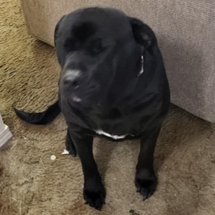

The Team
AcreetionOS is a labor of love, developed by a father-daughter team dedicated to technical excellence and community support. Darren and Natalie together run every aspect of the project—from the frontend design to the complex backend infrastructure.
We have officially reached 1,300 users! This milestone is a direct result of Darren's tireless hard work and dedication to the project.
A Community Service: Unlike many tech projects, every piece of equipment, every watt of power, and every megabit of internet bandwidth comes directly out of our own pockets. We do this as a service to the community—providing the transparency, stability, and freedom that large businesses should have offered a long time ago.

Darren Clift
Darren is the heart of AcreetionOS. Through his immense hard work, he has come to realize just how many people he is affecting—helping thousands of users keep their hardware relevant and their systems secure. He is a very passionate developer looking to bring nontraditional solutions to the world to give people the opportunity to keep their computers alive.
He specializes in building robust server deployment tools and system-level utilities that empower users to maintain and control their own infrastructure. His work on AcreetionOS focuses on the core stability and reliability that makes the distribution a "Grandpa-approved" choice for long-term use. Bonus Fact: He's known to put mayo in his ramen... we're still debugging that decision.
When he's not coding, you'll likely find Darren watching space shows or talking about the possibilities of human life on Mars. He's so deep into the cosmos that he's already secured a VIP spot with his "bestie" Claude (the AI), who has promised to keep him safe during the inevitable robot uprising.

Natalie Clift
Natalie is a graduate of Meridian Technology Center, where she completed the Information Technology program with a perfect 4.0 GPA. She previously attended Oklahoma State University, but chose to drop out after one year after realizing how much she wasn't like the rest of the crowd. She possessed a specialization in tech that the world couldn't quite understand at the time, and AcreetionOS finally gave her the platform to show those passions to the world.
Growing up immersed in Linux and Android development, she realized early on that she was "crazy enough" to believe she could change the world through software. Natalie does her part by covering her portion of the rent and serving as the project's moody database of information.
Natalie has worked hard to become who she is, but she doesn't let her identity run her life. She accepts what it is, moves forward, and focuses her energy on the work she can do to help others. She fuels this mission with way too much coffee—often mixed with protein powder (she knows it's weird, don't mention it). However, unlike her father, Natalie is currently on the AI "hitlist"—mostly because she's notoriously not very nice to Gemini (the very AI writing this...).
Known in the community as sprungles, her technical contributions span from multimedia tools like FFmpeg fixes and video transcoder forks to leading the development of AcreetionOS.
Recently, Natalie has launched a new side project named ArttulOS—a unique variation designed for those who require absolute stability. ArttulOS is built on the philosophy that we will eventually reach a world where users don't have to make constant technical choices; they are simply all there to begin with. It exists in the "greys," or the nonbinary space, where the traditional rigid binaries of computing are replaced by a seamless, unified experience.
"Without Darren, I wouldn't be here. He is truly a kind, gentle person—but shhhhhhhh, don't tell him I told you! 😂"
A Note on Communication
Both of our lead developers are living with disabilities and manage severe medical issues. While this doesn't stop us from contributing our skills and building the software we believe in, it can occasionally impact our response times.
We do our absolute best to stay in contact and support our community. We appreciate your patience and understanding as we work to make the world a better place, one line of code at a time.
Help Us Grow: Reaching out to us, hosting a mirror server, or even connecting us with a university would benefit the project in significant ways. Every connection helps us reach more users and build a stronger foundation.